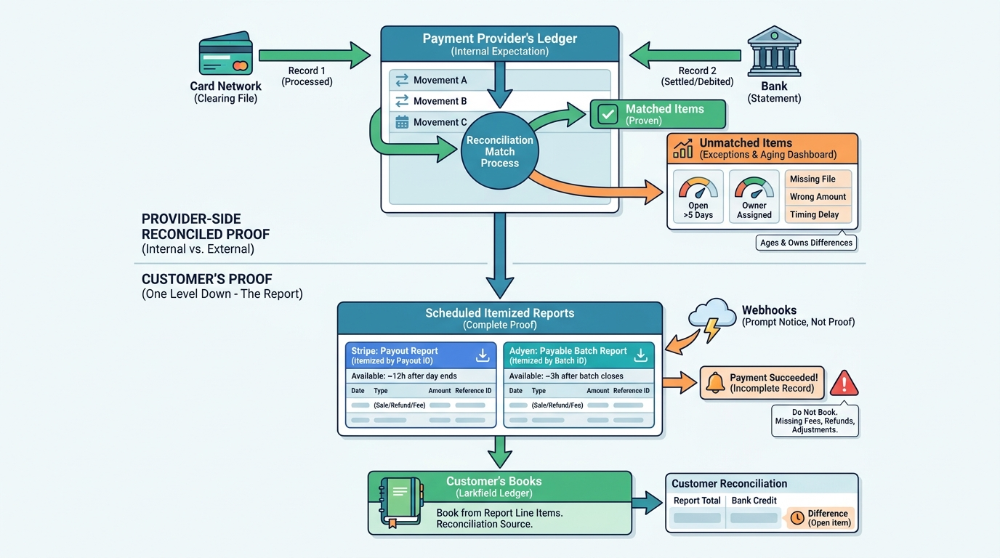

Part III — LEDGER: Recording and Moving Money
Proving the Money: Reconciliation Inside the Provider and Out
AI-assisted: researched and written with Claude Code; illustrations generated with Gemini. How this works

Image generated by Google Gemini (gemini-3-pro-image-preview)